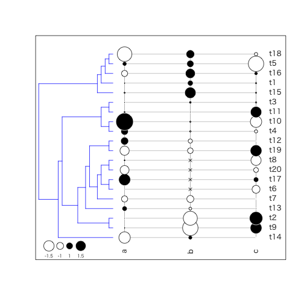

- Introduction
- 1. Application
- 2. Database
- 3. Dataset
- 4. Design
- 5. Development
-
6.
Data-analysis
- 6.1. adephylo
- 6.2. ape
- 6.3. AUC
- 6.4. BiodiversityR
- 6.5. caper
- 6.6. celestial
- 6.7. chron
- 6.8. coefplot
- 6.9. comclim
- 6.10. diversitree
- 6.11. DMwR
- 6.12. ForImp
- 6.13. geiger
- 6.14. geomorph
- 6.15. grofit
- 6.16. labdsv
- 6.17. MESS
- 6.18. mice
- 6.19. mvSLOUCH
- 6.20. nlme
- 6.21. openair
- 6.22. ouch
- 6.23. paleotree
- 6.24. phangorn
- 6.25. phylobase
- 6.26. phytools
- 6.27. picante
- 6.28. popbio
- 6.29. psych
- 6.30. rms
- 6.31. Rphylopars
- 6.32. spdep
- 6.33. tm
- 6.34. vegan
- 6.35. VIM
- 6.36. zoo
- 7. Graphics
- 8. Reproducible Research
- 9. Spatial
- 10. Statistics and Modeling
-
11.
Utility
- 11.1. base
- 11.2. broom
- 11.3. daff
- 11.4. data.table
- 11.5. dplyr
- 11.6. dtupdate
- 11.7. flora
- 11.8. foreach
- 11.9. formula.tools
- 11.10. geojsonio
- 11.11. git2r
- 11.12. Hmisc
- 11.13. jsonlite
- 11.14. latex2exp
- 11.15. log4r
- 11.16. lubridate
- 11.17. magrittr
- 11.18. methods
- 11.19. muRL
- 11.20. Nippon
- 11.21. passwordrandom
- 11.22. pforeach
- 11.23. pipeR
- 11.24. purrr
- 11.25. random
- 11.26. readr
- 11.27. readxl
- 11.28. reshape2
- 11.29. rex
- 11.30. Rgitbook
- 11.31. RJSONIO
- 11.32. rio
- 11.33. rlist
- 11.34. rncl
- 11.35. seer
- 11.36. splitstackshape
- 11.37. statar
- 11.38. stringi
- 11.39. stringr
- 11.40. sqldf
- 11.41. tabplot
- 11.42. taxize
- 11.43. tidyjson
- 11.44. tidyr
- 11.45. timeDate
- 11.46. unixtools
- 11.47. utils
- 11.48. WriteXLS
- 12. Web
- Published with GitBook
adephylo: exploratory analyses for the phylogenetic comparative method
系統比較法のための探索的解析
> library(adephylo)
Loading required package: ade4
Attaching package: 'adephylo'
The following object is masked from 'package:ade4':
orthogram
バージョン: 1.1.6
| 関数名 | 概略 |
|---|---|
.tipToRoot |
Low-level auxiliary functions for adephylo |
abouheif.moran |
Abouheif's test based on Moran's I |
adephylo-package |
The adephylo package |
bullseye |
Fan-like phylogeny with possible representation of traits on tips |
carni19 |
Phylogeny and quantative trait of carnivora |
carni70 |
Phylogeny and quantitative traits of carnivora |
dibas |
DIstance-Based Assignment |
distRoot |
Compute the distance of tips to the root |
distTips |
Compute some phylogenetic distance between tips |
listDD |
List direct descendants for all nodes of a tree |
listTips |
List tips descendings from all nodes of a tree |
lizards |
Phylogeny and quantitative traits of lizards |
maples |
Phylogeny and quantitative traits of flowers |
mjrochet |
Phylogeny and quantitative traits of teleos fishes |
moran.idx |
Computes Moran's index for a variable |
orthobasis.phylo |
Computes Moran's eigenvectors from a tree or a phylogenetic proximity matrix |
orthogram |
Orthonormal decomposition of variance |
palm |
Phylogenetic and quantitative traits of amazonian palm trees |
ppca |
Phylogenetic principal component analysis |
procella |
Phylogeny and quantitative traits of birds |
proxTips |
Compute some phylogenetic proximities between tips |
sp.tips |
Find the shortest path between tips of a tree |
table.phylo4d |
Graphical display of phylogeny and traits |
tithonia |
Phylogeny and quantitative traits of flowers |
treePart |
Define partitions of tips according from a tree |
ungulates |
Phylogeny and quantitative traits of ungulates. |
> library(ade4)
> library(phylobase)
> data("maples") # 形質値データ -> list
> str(maples)
List of 2
$ tre: chr "(((A_palmatum:0.6,A_amoenum:0.6):2.5,(A_sieboldianum:1.8,(A_japonicum:1.2,(A_shirasawanum:0.6,A_tenuifolium:0.6):0.6):0.6):1.3)"| __truncated__
$ tab:'data.frame': 17 obs. of 31 variables:
..$ MatHt : num [1:17] 3.22 2.71 2.3 2.3 3 2.08 3.56 2.3 2.89 3.22 ...
..$ SdSz : num [1:17] 3.01 3.14 3 3.81 4.18 2.96 4.17 4.18 4.37 3.58 ...
..$ LfPt : num [1:17] 4.27 4.6 4.47 4.88 4.68 4.18 5.09 4.95 5.14 4.7 ...
..$ InflPd : num [1:17] 3.96 4.07 3.91 4.17 4.08 3.42 3.87 4.13 3.74 4.05 ...
..$ Pet : num [1:17] 3.3 3.75 3.68 3.62 3.68 3.21 4.22 2.56 4.28 3.89 ...
..$ TCSA : num [1:17] -0.38 0.19 0.5 1.13 0.75 -0.19 1.37 0.79 1.83 1.5 ...
..$ Infl : num [1:17] 3 3.01 2.66 3.33 3.11 2.64 3.75 4.03 3.15 3.84 ...
..$ LfPr : num [1:17] 1 1 1 1 1 1 1.8 1 3.8 2.5 ...
..$ IndLA : num [1:17] 3.05 3.81 3.42 4.74 4.06 2.97 4.74 4.19 4.73 3.84 ...
..$ ShLA : num [1:17] 3.74 4.51 4.11 5.43 4.75 3.67 6 4.88 6.71 5.36 ...
..$ Bif : num [1:17] 80.3 80.3 67.3 79.5 70.8 64.7 61.7 74 54.3 46.4 ...
..$ Dom : num [1:17] 0.57 0.57 0.6 0.59 0.58 0.61 0.79 0.6 0.78 0.71 ...
..$ CATA.P : num [1:17] -2.23 -1.72 -1.67 -1.61 -1.45 -1.54 -1.72 -1.86 -1.55 -1.63 ...
..$ CATA.S : num [1:17] 1.01 0.97 1.02 0.93 1.01 1.03 1 0.99 0.93 0.9 ...
..$ CATP.P : num [1:17] 4.38 4.12 4.13 3.15 3.7 4.53 2.42 3.27 2.08 2.34 ...
..$ CATP.S : num [1:17] 0.95 0.86 0.83 0.89 0.89 0.96 0.82 0.94 0.71 0.79 ...
..$ DMTA.P : num [1:17] -1.9 -1.98 -1.83 -1.51 -1.83 -1.47 -1.3 -1.48 -1.59 -1.63 ...
..$ DMTA.S : num [1:17] 2.26 2.26 2.39 1.96 2.62 2.5 2.29 2.22 2.21 2 ...
..$ HTCA.mx : num [1:17] 0.97 1.42 1.03 1.05 1.83 2.03 0.42 1.61 1.51 0.8 ...
..$ HTCA.S : num [1:17] 2.07 2.02 1.89 1.71 2.01 2.15 1.44 1.95 1.92 1.78 ...
..$ HTCV.P : num [1:17] -2.94 -2.61 -2.38 -2.45 -1.9 -1.61 -2.72 -1.68 -3.01 -3.01 ...
..$ HTCV.S : num [1:17] 3.47 2.76 2.61 2.75 3.25 3.08 2.37 2.69 2.93 2.69 ...
..$ HTSL.P : num [1:17] 4.68 4.61 4.56 4.6 4.69 4.67 4.49 4.75 4.46 4.48 ...
..$ HTSL.S : num [1:17] 1.17 1.15 1.07 1.03 1.03 1.07 0.99 0.96 1.15 1.14 ...
..$ HTTA.P : num [1:17] -2.64 -1.7 -1.64 -1.37 -0.74 -0.77 -1.76 -1.32 -1.64 -2.06 ...
..$ HTTA.S : num [1:17] 2.38 1.8 1.94 1.71 2.06 2.24 1.54 1.97 1.94 1.74 ...
..$ HTTL.P : num [1:17] 5.78 5.92 6.03 5.9 6.22 6.76 5.16 5.94 4.94 5.02 ...
..$ HTTL.S : num [1:17] 2.22 1.67 1.71 1.72 1.86 2.01 1.45 1.81 1.69 1.66 ...
..$ HTTP.P : num [1:17] 3.97 4.15 4.16 3.38 4.33 5.26 2.23 3.96 1.87 2.05 ...
..$ HTTP.S : num [1:17] 2.28 1.61 1.57 1.62 1.82 2.09 1.29 1.84 1.39 1.43 ...
..$ Lf.Thickness: num [1:17] 4.72 NA 4.69 4.79 NA NA 4.82 4.35 4.96 4.87 ...
> tre <- ape::read.tree(text = maples$tre) # 系統データ -> phylo class
>
> dom <- maples$tab$Dom # Leader Dominance index
> bif <- maples$tab$Bi # Terminal Shoot: the angle between the leader and the dominant lateral
abouheif.moran
> W1 <- proxTips(tre, method = "oriAbouheif")
> abouheif.moran(maples$tab$Dom, W1)
class: krandtest
Monte-Carlo tests
Call: as.krandtest(sim = matrix(res$result, ncol = nvar, byrow = TRUE),
obs = res$obs, alter = alter, names = test.names)
Number of tests: 1
Adjustment method for multiple comparisons: none
Permutation number: 999
Test Obs Std.Obs Alter Pvalue
1 x 0.6788363 4.474355 greater 0.001
other elements: adj.method call
bullseye
distTips
tips間の系統距離行列の計算
Arguments
- x
- tips
- method: 距離計算に使う方法。
patristic,nNodes,Abouheif, orsumDDの中から選ぶpatristic... 系統樹の距離（単純な枝の長さの足し算）nNodes... ノードの数Abouheif... Abouheif distancesumDD
- useC
> x <- ape::rtree(10) %>%
+ as(object = ., Class = "phylo4") # phylo4d クラスへの変換
> # plot(x, show.node = TRUE)
> # ape::axisPhylo()
> distTips(x = x, tips = 1:3, method = "patristic")
t5 t7 t1 t8 t6 t3 t9
t7 1.3622399
t1 3.1787622 3.4161391
t8 2.6416189 2.8789958 0.5601260
t6 2.9367747 3.1741516 0.9653232 0.4281799
t3 3.4405237 3.6779006 3.3834699 2.8463266 3.1414824
t9 2.9171725 3.1545494 2.8601187 2.3229754 2.6181313 1.3717909
t4 2.7581290 2.9955059 2.7010752 2.1639319 2.4590877 1.5499530 1.0266019
t10 2.3969884 2.6343652 3.7910620 3.2539187 3.5490745 4.0528235 3.5294723
t2 2.7847387 3.0221156 4.1788123 3.6416690 3.9368249 4.4405738 3.9172227
t4 t10
t7
t1
t8
t6
t3
t9
t4
t10 3.3704287
t2 3.7581791 0.8047408
> distTips(x = x, tips = 1:3, method = "nNodes")
t5 t7 t1 t8 t6 t3 t9 t4 t10
t7 1
t1 5 5
t8 5 5 1
t6 4 4 2 2
t3 5 5 5 5 4
t9 5 5 5 5 4 1
t4 4 4 4 4 3 2 2
t10 4 4 6 6 5 6 6 5
t2 4 4 6 6 5 6 6 5 1
> distTips(x = x, tips = 1:3, method = "Abouheif")
t5 t7 t1 t8 t6 t3 t9 t4 t10
t7 2
t1 32 32
t8 32 32 2
t6 16 16 4 4
t3 32 32 32 32 16
t9 32 32 32 32 16 2
t4 16 16 16 16 8 4 4
t10 16 16 64 64 32 64 64 32
t2 16 16 64 64 32 64 64 32 2
> distTips(x = x, tips = 1:3, method = "sumDD")
t5 t7 t1 t8 t6 t3 t9 t4 t10
t7 2
t1 10 10
t8 10 10 2
t6 8 8 4 4
t3 10 10 10 10 8
t9 10 10 10 10 8 2
t4 8 8 8 8 6 4 4
t10 8 8 12 12 10 12 12 10
t2 8 8 12 12 10 12 12 10 2
maples
Ackerly and Donoghue (1998)が用いた系統データセット。17種（Acer）の31の形質についてのデータ
> maples$tab %>% {
+ names(.) %>% print()
+ nrow(.) %>% print()
+ popbio::head2(.) %>% kable(format = "markdown")
+ }
[1] "MatHt" "SdSz" "LfPt" "InflPd"
[5] "Pet" "TCSA" "Infl" "LfPr"
[9] "IndLA" "ShLA" "Bif" "Dom"
[13] "CATA.P" "CATA.S" "CATP.P" "CATP.S"
[17] "DMTA.P" "DMTA.S" "HTCA.mx" "HTCA.S"
[21] "HTCV.P" "HTCV.S" "HTSL.P" "HTSL.S"
[25] "HTTA.P" "HTTA.S" "HTTL.P" "HTTL.S"
[29] "HTTP.P" "HTTP.S" "Lf.Thickness"
[1] 17
| MatHt | SdSz | LfPt | InflPd | Pet | TCSA | Infl | LfPr | IndLA | ShLA | Bif | Dom | CATA.P | CATA.S | CATP.P | CATP.S | DMTA.P | DMTA.S | HTCA.mx | HTCA.S | HTCV.P | HTCV.S | HTSL.P | HTSL.S | HTTA.P | HTTA.S | HTTL.P | HTTL.S | HTTP.P | HTTP.S | Lf.Thickness | |
|---|---|---|---|---|---|---|---|---|---|---|---|---|---|---|---|---|---|---|---|---|---|---|---|---|---|---|---|---|---|---|---|
| A_palmatum | 3.22 | 3.01 | 4.27 | 3.96 | 3.30 | -0.38 | 3.00 | 1.0 | 3.05 | 3.74 | 80.3 | 0.57 | -2.23 | 1.01 | 4.38 | 0.95 | -1.90 | 2.26 | 0.97 | 2.07 | -2.94 | 3.47 | 4.68 | 1.17 | -2.64 | 2.38 | 5.78 | 2.22 | 3.97 | 2.28 | 4.72 |
| A_amoenum | 2.71 | 3.14 | 4.60 | 4.07 | 3.75 | 0.19 | 3.01 | 1.0 | 3.81 | 4.51 | 80.3 | 0.57 | -1.72 | 0.97 | 4.12 | 0.86 | -1.98 | 2.26 | 1.42 | 2.02 | -2.61 | 2.76 | 4.61 | 1.15 | -1.70 | 1.80 | 5.92 | 1.67 | 4.15 | 1.61 | NA |
| A_sieboldianum | 2.30 | 3.00 | 4.47 | 3.91 | 3.68 | 0.50 | 2.66 | 1.0 | 3.42 | 4.11 | 67.3 | 0.60 | -1.67 | 1.02 | 4.13 | 0.83 | -1.83 | 2.39 | 1.03 | 1.89 | -2.38 | 2.61 | 4.56 | 1.07 | -1.64 | 1.94 | 6.03 | 1.71 | 4.16 | 1.57 | 4.69 |
| . | . | . | . | . | . | . | . | . | . | . | . | . | . | . | . | . | . | . | . | . | . | . | . | . | . | . | . | . | . | . | . |
| A_nipponicum | 2.89 | 5.38 | 5.67 | 4.71 | 4.99 | 2.52 | 4.48 | 1.5 | 5.43 | 6.52 | 42.7 | 0.75 | -1.18 | 0.87 | 1.97 | 0.77 | -1.95 | 2.14 | 0.54 | 1.94 | -3.10 | 3.09 | 4.52 | 0.79 | -1.76 | 2.14 | 5.01 | 0.84 | 1.53 | 1.01 | NA |
moran.idx
moranの指数Iを計算
> W <- proxTips(tre, method = "Abouheif") # maple data
> moran.idx(maples$tab$Dom, W)
[1] 0.6566158
> moran.idx(maples$tab$Bi, W)
[1] 0.6287675
> moran.idx(rnorm(nTips(tre)), W)
[1] -0.1352462
phylo4d-class
phylo4dクラス。系統データのS4実装。系統樹データと形質値データを組み合わせて作成可能。テーブル操作向き
> phylo4d(as(tree.owls.bis, "phylo4"), data.frame(wing = 1:3)) %>% {
+ print(.)
+ names(.)
+ summary(.)
+ checkPhylo4(.)
+ }
Error in phylo4d(as(tree.owls.bis, "phylo4"), data.frame(wing = 1:3)): error in evaluating the argument 'x' in selecting a method for function 'phylo4d': Error in .class1(object) : object 'tree.owls.bis' not found
proxTips
枝間の系統的発生近接距離（？）計算
Arguments
- x
- tips
- method:
patristic: (inversed sum of) branch lengthnNodes: (inversed) number of nodes on the path between the nodesoriAbouheif: original Abouheif's proximity, with diagonal (see details)Abouheif: Abouheif's proximity without diagonal (see details)sumDD: (inversed) sum of direct descendants of all nodes on the path (see details)
- a
- normalize
- symmetric
- useC
> x <- as(object = rtree(10), Class = "phylo4")
Error in .class1(object): could not find function "rtree"
> # plot(x, show.node=TRUE)
> ## compute different distances
> proxTips(x = x, tips = 1:5, method = "patristic")
t5 t7 t1 t8 t6 t3
t5 0.00000000 0.21415737 0.07622829 0.08183437 0.07812315 0.08412673
t7 0.21415737 0.00000000 0.07363956 0.07830043 0.07519536 0.08121247
t1 0.07622829 0.07363956 0.00000000 0.31422302 0.19605801 0.07367267
t8 0.08183437 0.07830043 0.31422302 0.00000000 0.38096828 0.07839328
t6 0.07812315 0.07519536 0.19605801 0.38096828 0.00000000 0.07524719
t3 0.08412673 0.08121247 0.07367267 0.07839328 0.07524719 0.00000000
t9 0.09059680 0.08671219 0.07835890 0.08522664 0.08068130 0.19772995
t4 0.09523686 0.09077830 0.08237638 0.09074612 0.08524433 0.17396217
t10 0.11501261 0.10816088 0.06212326 0.06434603 0.06272949 0.06973941
t2 0.10280686 0.09779296 0.05889700 0.06040723 0.05924520 0.06603829
t9 t4 t10 t2
t5 0.09059680 0.09523686 0.11501261 0.10280686
t7 0.08671219 0.09077830 0.10816088 0.09779296
t1 0.07835890 0.08237638 0.06212326 0.05889700
t8 0.08522664 0.09074612 0.06434603 0.06040723
t6 0.08068130 0.08524433 0.06272949 0.05924520
t3 0.19772995 0.17396217 0.06973941 0.06603829
t9 0.00000000 0.23814461 0.07295369 0.06843992
t4 0.23814461 0.00000000 0.07591826 0.07090760
t10 0.07295369 0.07591826 0.00000000 0.34730660
t2 0.06843992 0.07090760 0.34730660 0.00000000
> proxTips(x, 1:5, "nNodes")
t5 t7 t1 t8 t6 t3
t5 0.00000000 0.35714286 0.07039637 0.07039637 0.09037456 0.07039637
t7 0.35714286 0.00000000 0.07039637 0.07039637 0.09037456 0.07039637
t1 0.07039637 0.07039637 0.00000000 0.34682081 0.17816862 0.06936416
t8 0.07039637 0.07039637 0.34682081 0.00000000 0.17816862 0.06936416
t6 0.09037456 0.09037456 0.17816862 0.17816862 0.00000000 0.08908431
t3 0.07039637 0.07039637 0.06936416 0.06936416 0.08908431 0.00000000
t9 0.07039637 0.07039637 0.06936416 0.06936416 0.08908431 0.34682081
t4 0.09037456 0.09037456 0.08908431 0.08908431 0.12195122 0.17816862
t10 0.09334416 0.09334416 0.06136927 0.06136927 0.07554640 0.06136927
t2 0.09334416 0.09334416 0.06136927 0.06136927 0.07554640 0.06136927
t9 t4 t10 t2
t5 0.07039637 0.09037456 0.09334416 0.09334416
t7 0.07039637 0.09037456 0.09334416 0.09334416
t1 0.06936416 0.08908431 0.06136927 0.06136927
t8 0.06936416 0.08908431 0.06136927 0.06136927
t6 0.08908431 0.12195122 0.07554640 0.07554640
t3 0.34682081 0.17816862 0.06136927 0.06136927
t9 0.00000000 0.17816862 0.06136927 0.06136927
t4 0.17816862 0.00000000 0.07554640 0.07554640
t10 0.06136927 0.07554640 0.00000000 0.38961039
t2 0.06136927 0.07554640 0.38961039 0.00000000
> proxTips(x, 1:5, "Abouheif")
t5 t7 t1 t8 t6 t3
t5 0.00000000 0.57142857 0.03398618 0.03398618 0.06904762 0.03398618
t7 0.57142857 0.00000000 0.03398618 0.03398618 0.06904762 0.03398618
t1 0.03398618 0.03398618 0.00000000 0.51612903 0.26236559 0.03225806
t8 0.03398618 0.03398618 0.51612903 0.00000000 0.26236559 0.03225806
t6 0.06904762 0.06904762 0.26236559 0.26236559 0.00000000 0.06559140
t3 0.03398618 0.03398618 0.03225806 0.03225806 0.06559140 0.00000000
t9 0.03398618 0.03398618 0.03225806 0.03225806 0.06559140 0.51612903
t4 0.06904762 0.06904762 0.06559140 0.06559140 0.13333333 0.26236559
t10 0.07738095 0.07738095 0.01848118 0.01848118 0.03750000 0.01848118
t2 0.07738095 0.07738095 0.01848118 0.01848118 0.03750000 0.01848118
t9 t4 t10 t2
t5 0.03398618 0.06904762 0.07738095 0.07738095
t7 0.03398618 0.06904762 0.07738095 0.07738095
t1 0.03225806 0.06559140 0.01848118 0.01848118
t8 0.03225806 0.06559140 0.01848118 0.01848118
t6 0.06559140 0.13333333 0.03750000 0.03750000
t3 0.51612903 0.26236559 0.01848118 0.01848118
t9 0.00000000 0.26236559 0.01848118 0.01848118
t4 0.26236559 0.00000000 0.03750000 0.03750000
t10 0.01848118 0.03750000 0.00000000 0.66666667
t2 0.01848118 0.03750000 0.66666667 0.00000000
> proxTips(x, , "sumDD")
t5 t7 t1 t8 t6 t3
t5 0.00000000 0.35714286 0.07039637 0.07039637 0.09037456 0.07039637
t7 0.35714286 0.00000000 0.07039637 0.07039637 0.09037456 0.07039637
t1 0.07039637 0.07039637 0.00000000 0.34682081 0.17816862 0.06936416
t8 0.07039637 0.07039637 0.34682081 0.00000000 0.17816862 0.06936416
t6 0.09037456 0.09037456 0.17816862 0.17816862 0.00000000 0.08908431
t3 0.07039637 0.07039637 0.06936416 0.06936416 0.08908431 0.00000000
t9 0.07039637 0.07039637 0.06936416 0.06936416 0.08908431 0.34682081
t4 0.09037456 0.09037456 0.08908431 0.08908431 0.12195122 0.17816862
t10 0.09334416 0.09334416 0.06136927 0.06136927 0.07554640 0.06136927
t2 0.09334416 0.09334416 0.06136927 0.06136927 0.07554640 0.06136927
t9 t4 t10 t2
t5 0.07039637 0.09037456 0.09334416 0.09334416
t7 0.07039637 0.09037456 0.09334416 0.09334416
t1 0.06936416 0.08908431 0.06136927 0.06136927
t8 0.06936416 0.08908431 0.06136927 0.06136927
t6 0.08908431 0.12195122 0.07554640 0.07554640
t3 0.34682081 0.17816862 0.06136927 0.06136927
t9 0.00000000 0.17816862 0.06136927 0.06136927
t4 0.17816862 0.00000000 0.07554640 0.07554640
t10 0.06136927 0.07554640 0.00000000 0.38961039
t2 0.06136927 0.07554640 0.38961039 0.00000000
table.phylo4d
系統樹上に形質値を表示。よりたくさんの系統を扱う場合にはbullseyeを使うと良い
Arguments
- x: phylo4dオブジェクト
- treetype:
phylogramorcladogram - repVar
- center
- scale
- grid
- box
label,symbol, andlegend- symbol:
circle,squares, orcolors - legend
- show.tip.label
- show.node.label
- show.var.label
- tip.label
- var.label
- cex.symbol
- cex.label
- cex.legend
- symbol:
- ratio.tree
- font
- pch
- col
- coord.legend
- ...
> tr <- rtree(20)
> dat <- data.frame(a = rnorm(20), b = scale(1:20), c = runif(20, -2, 2))
> dat[3:6, 2] <- NA # introduce some NAs
> head(dat)
>
> phylo4d(tr, dat) %>% # build a phylo4d object
+ table.phylo4d(.,
+ cex.leg = 0.6,
+ treetype = "phylogram",
+ use.edge.length = FALSE,
+ show.node = FALSE,
+ edge.color = "blue")
